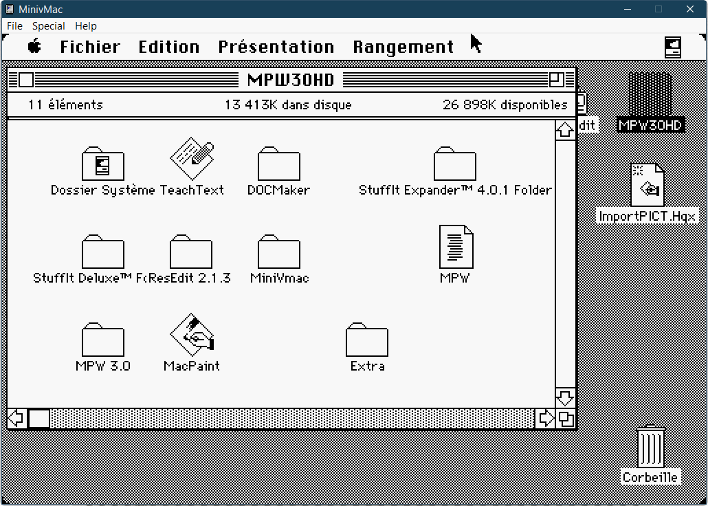
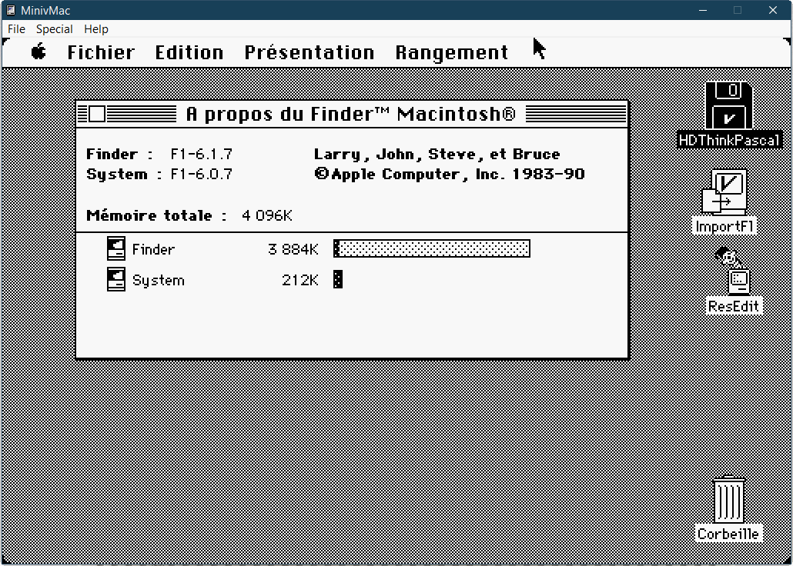

Mini vMac Ressources
Disques bootables
Cliquer sur le nom de disque pour afficher son contenu
HD40SYS607.dsk (40 Mo)
HDCOMPILEIT.dsk (40 Mo)
HDMPW30.dsk (40 Mo)


HDTHINKPASCAL.dsk (20 Mo)



MacHD48M.dsk (50 Mo)
Macintosh Pascal 1.0.dsk (400 Ko)
PCSOFT.dsk (12 Mo)